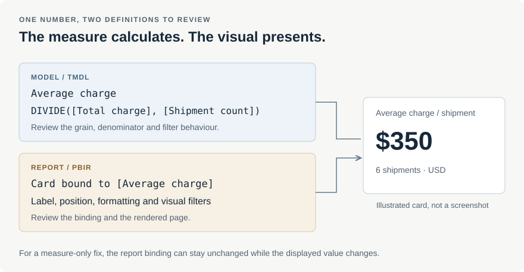

A change under review · PBIP & Git
What I review in a Power BI project before publishing
The request is to fix average charge per shipment. The card still looks the same, but the total changes from $300 to $350. Before publishing, I want to see the expression that changed and explain why the new number is right.
That is the practical reason I am interested in PBIP. It makes much of the report and model definition available as text files, where a small change can be reviewed in Git. It does not make a calculation correct, but it makes the calculation harder to hide inside “the new version of the report.”
This is a worked review using fictional shipments. The folder tree and diff below are illustrative excerpts, not an exported, runnable Power BI project.

Find the calculation, not the card
A report visual has a position, formatting, filters and references to fields. A model measure has an expression and a format string, and relies on the model's tables and relationships. Both affect what the user sees, but they live in different parts of the project.
ShipmentReview.pbip
ShipmentReview.SemanticModel\
definition.pbism
definition\
tables\
Shipments.tmdl
ShipmentReview.Report\
definition.pbir
definition\
pages\
<page-id>\
visuals\
<visual-id>\
visual.json
docs\
model-context.md
.gitignore
The .pbip file points to a report; it is not the whole project on its own.
definition.pbir includes the report's model reference.
With a local model reference, opening the project brings up the report and model.
A thin report can instead reference a published model and have no local semantic-model folder.
In this example, Shipments.tmdl contains the table's model metadata,
including measures assigned to it. TMDL is the model-definition language; PBIR is the
report-definition format. Some projects still use model.bim for the model
or the legacy report.json for the report. Saving as PBIP does not imply
that every project has exactly the tree above.
The wrong average can look quite reasonable
Take the six initial charges from the refresh example: $100, $200, $300, $400, $500 and $600. For this review only, assign the first two shipments to fictional carrier Alder and the other four to Beacon. That carrier field is an extension for this explanation, not part of the SQL download.
| Carrier | Shipments | Total charge | Average charge |
|---|---|---|---|
| Alder | 2 | $300 | $150 |
| Beacon | 4 | $1,800 | $450 |
| All shipments | 6 | $2,100 | $350 |
Averaging $150 and $450 gives $300. It gives each carrier the same weight, even though Beacon has twice as many shipments. That could be a valid metric, but it is not the requested average per shipment.
measure 'Average charge' =
- AVERAGEX(
- VALUES(Shipments[CARRIER]),
- CALCULATE(AVERAGE(Shipments[NET_CHARGE]))
- )
+ DIVIDE([Total charge], [Shipment count])
For this fixture, [Total charge] sums NET_CHARGE and
[Shipment count] counts rows. That count is appropriate only because the
intended grain is one row per shipment. I would inspect both existing definitions before
accepting the shorter expression.
At each carrier row, the old and new expressions return the same result. The grand total exposes the difference. That is why my review needs the total row, not just a screenshot with a carrier selected.
Before · carriers weighted equally
Average charge / shipment
$300($150 + $450) / 2 carriers
After · shipments weighted equally
Average charge / shipment
$350$2,100 / 6 shipments
Illustrated report cards, not Power BI screenshots. The label alone does not reveal that the first calculation uses the wrong denominator for this request.
Read the rest of the diff too
For a measure-only correction, I expect a small model change. If the report pages, relationships or source expressions also changed, I want to know why. They are not automatically wrong, but they should not slip through as incidental formatting.
git status --short
git diff --stat
git diff -- ShipmentReview.SemanticModel
git diff -- ShipmentReview.Report
git diff --cachedThe first diff commands show unstaged changes; the last shows staged changes. New, untracked files need their own inspection too. I would establish a clean, known baseline before starting so unrelated work does not get mixed into the review. Git can show what is different; the task description explains whether it should be.
If the existing visual still references the same measure, a report-file edit may be unnecessary. If the requirement includes a renamed label or a new tooltip, I would review that as a separate report change and check the rendered result. Generated object IDs are not a useful place for a broad search-and-replace.
Metadata is readable, not automatically safe to share
PBIP gives me a way to track definitions without committing the local imported-data
cache. It does not guarantee a data-free or sanitised folder.
The project can have a .pbi\cache.abf file containing cached model data;
model expressions can also contain inline data, source names or sensitive literals.
Desktop's default Git exclusions cover cache.abf and
localSettings.json. I would check those rules are present, especially in
an existing repository where Desktop may not create a new .gitignore.
An ignore rule does not remove a file that Git already tracks.
Review the actual staged content before sharing it.
I also would not ignore the entire .pbi folder without checking its
contents. Some files have a different purpose. For example,
unappliedChanges.json can hold pending Power Query edits; applying those
later can overwrite query changes made elsewhere. That is a workflow decision,
not just a nuisance file to hide.
What still has to happen in Power BI
I would start with a copy of a small report, enable the PBIP save option in Desktop if the installed version requires it, and save a baseline before making the change. Microsoft's current project documentation still marks PBIP as preview, so supported editing paths and limitations need checking against the version being used.
For a model edit, Desktop or model-aware tooling is a good default. For supported external file edits, validate the relevant format and load the changed project back into Desktop. Not every JSON file in a project supports external editing, and valid JSON is not the same as a valid report.
- Check the calculation. Expect $350 overall, $150 for Alder and $450 for Beacon in this fixture. Confirm date filters still apply and an empty selection returns a blank average.
- Check the report. Inspect the card, total rows, number formatting, filters and mobile layout. A model diff cannot show whether the label still fits.
- Check the target environment. After an approved deployment, verify connections, refresh and relevant security behaviour in that environment. A local folder is not evidence that service credentials or refresh settings are correct.
An agent can help locate the measure and summarise the diff. The context brief explains the intended metric and edit boundaries. Neither one replaces the numerical check. For this article, the numbers are worked expectations; no Power BI execution is being claimed.
Further reading
Tabular Editor's The PBIP format in simple terms: why metadata is so important prompted this review example. This article takes a narrower path: one shipment measure, the files it affects, and the checks before publishing.